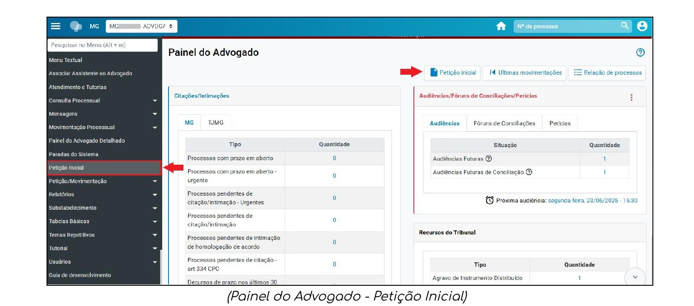
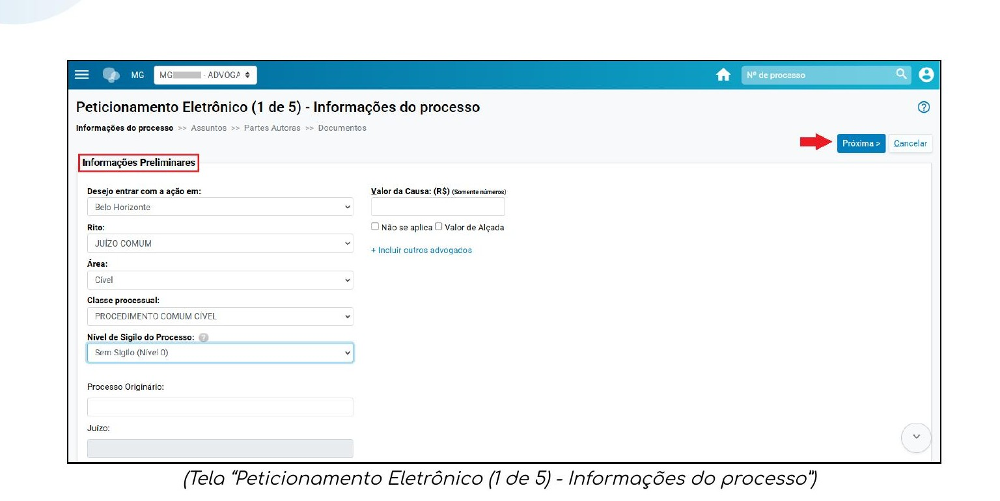
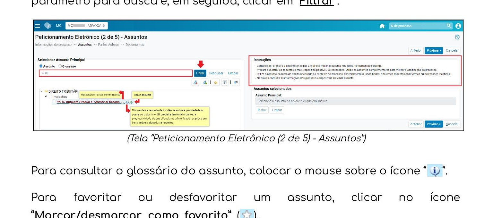
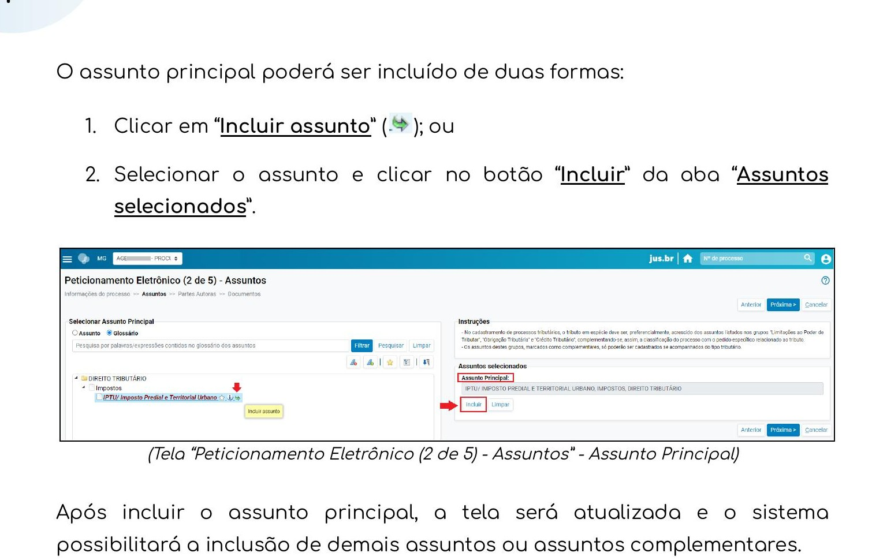
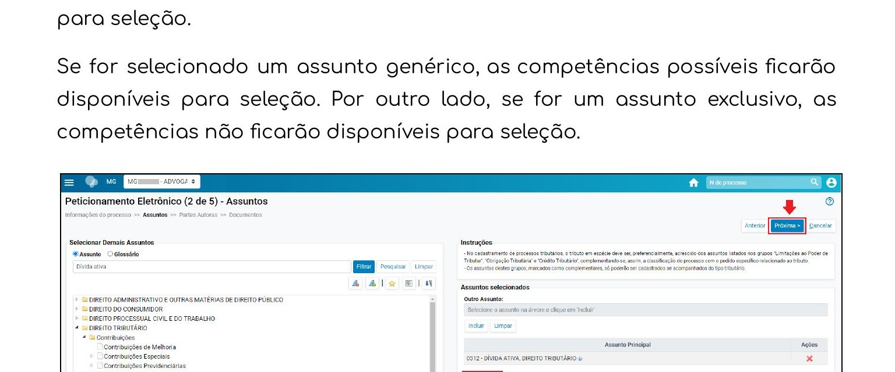
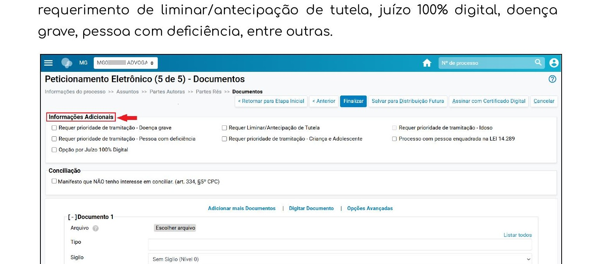
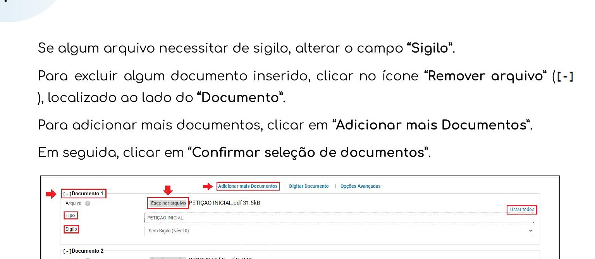

Montagem do Processo e Distribuição no eproc/TJMG
Fluxo completo para montagem do processo de inventário e sua distribuição no sistema eproc do TJMG.
Antes de iniciar: verifique se o eproc está implantado na comarca onde o inventário será distribuído.
Antes de acessar o eproc, reúna e organize todos os documentos do processo.
Documentos necessários antes de iniciar a distribuição:
FALECIDO
- Certidão de óbito
- Certidão de casamento ou de nascimento (conforme estado civil)
- Pacto antenupcial, se houver
HERDEIROS E MEEIROS
- RG e CPF de cada herdeiro
- Certidão de nascimento (solteiro) ou certidão de casamento (casado) — conforme estado civil
INVENTARIANTE
- Termo de nomeação ou declaração de inventariante (inventário extrajudicial)
BENS DO ESPÓLIO
- Certidão de matrícula atualizada de cada imóvel
- Extratos de contas bancárias, aplicações e investimentos
- Documentos de veículos (CRLV), participações societárias e demais bens
- Declaração de bens e valores do espólio
FISCAL/TRIBUTÁRIO
- ITCD — comprovante de pagamento, pedido de isenção ou protocolo da DBD no e-ITCD
PEÇA PROCESSUAL
- Petição inicial (PDF)
- Procuração outorgada pelos herdeiros (PDF)
Acesse o eproc em https://eproc1g.tjmg.jus.br/eproc/ com login e senha. No Painel do Advogado, clique em Petição Inicial — disponível no menu superior ou no menu lateral esquerdo — para iniciar o ajuizamento.

Painel do Advogado — clique em Petição Inicial (seta vermelha) para iniciar a distribuição
⚠ ATENÇÃO — Inventário exige sigilo obrigatório:
Na Etapa 1, configure o Nível de Sigilo com no mínimo nível 1.
O sistema bloqueará a distribuição de processos de Família sem sigilo configurado.
Preencha os campos da tela de Informações do Processo conforme abaixo:
Cidade: Comarca onde o inventário será distribuído
Rito: PROCEDIMENTO COMUM CÍVEL
Área: Família
Classe processual: INVENTÁRIO
Nível de sigilo: mínimo nível 1 — obrigatório
Valor da causa: valor total dos bens do espólio
Processo Originário: preencher apenas se for incidente de processo já existente

Tela Peticionamento Eletrônico (1 de 5) — Informações do Processo
Após preencher todos os campos, clique em Próxima para avançar para a Etapa 2.
Selecione o assunto principal do processo. Pesquise por INVENTÁRIO na barra de busca. Selecione o assunto mais específico disponível e clique em Incluir assunto.

Tela (2 de 5) — busca e seleção do assunto principal
Após incluir o assunto principal, o sistema possibilitará a inclusão de assuntos complementares. Adicione os pertinentes ao caso. Se o sistema exibir o campo Competência, selecione a competência correta para a ação.

Tela (2 de 5) — assunto principal incluído e opção de adicionar assuntos complementares

Tela (2 de 5) — campo Competência disponível quando há mais de uma opção
Após selecionar os assuntos, clique em Próxima para avançar para a Etapa 3.
Nesta etapa, cadastre como partes autoras o inventariante e todos os herdeiros e meeiros. Todos figuram no polo ativo — independentemente de quem seja o inventariante.
Como cadastrar cada parte autora:
- Selecione Tipo de Pessoa: Pessoa Física
- Informe o CPF e clique em Consultar
- O sistema buscará os dados automaticamente na Receita Federal
- Se a pessoa não estiver cadastrada: clique em OK na mensagem, preencha os dados
e insira ao menos um endereço antes de salvar
- Após incluir a parte, defina o Tipo de Representação clicando em Definir
- Indique a situação de Justiça Gratuita (Requerida ou Não Requerida)
- Repita para cada herdeiro e meeiro
Documentos para juntar por estado civil de cada herdeiro/meeiro:
- Solteiro: certidão de nascimento
- Casado: certidão de casamento
- Divorciado: certidão de casamento com averbação de divórcio
- Viúvo: certidão de casamento + certidão de óbito do cônjuge
- União estável: escritura pública ou sentença de reconhecimento
Após incluir todos os herdeiros e meeiros como autores, clique em Próxima para avançar para a Etapa 4.
No polo passivo, cadastre apenas o falecido.
Após cadastrar o falecido, clique em Próxima para avançar para a Etapa 5.
Nesta etapa, informe as características adicionais do processo e anexe todos os documentos.
Em Informações Adicionais, marque os itens aplicáveis:
- Doença grave: quando alguma parte for idosa acima de 80 anos ou portadora de doença grave
- Pessoa com deficiência: quando aplicável
- Opção por Juízo 100% Digital: quando as partes optarem pelo juízo digital

Tela (5 de 5) — Documentos: Informações Adicionais e campo para upload dos arquivos
Para cada documento, clique em Escolher arquivo, selecione o arquivo e informe o Tipo correspondente no campo ao lado. Para adicionar mais documentos, clique em Adicionar mais Documentos. Após selecionar todos, clique em Confirmar seleção de documentos.

Documentos selecionados — petição inicial e procuração incluídas, botão Confirmar seleção de documentos
Ordem recomendada de juntada dos documentos:
- Petição Inicial
- Procuração
- Certidão de Óbito
- Certidão de casamento do falecido (ou de nascimento, se solteiro)
- Pacto antenupcial (quando houver)
- Documentos de cada herdeiro/meeiro:
— RG e CPF
— Certidão de nascimento (se solteiro) ou de casamento (se casado)
- Certidões de matrícula dos imóveis
- Declaração de bens do espólio
- ITCD — pagamento, isenção ou protocolo da DBD
- Demais documentos pertinentes ao caso
Após confirmar os documentos, clique em Finalizar.
Ao clicar em Finalizar, o sistema exibirá um resumo de todas as informações para conferência final. Verifique classe, assuntos, partes e documentos. Estando tudo correto, clique em Confirmar Ajuizamento.
Se preferir distribuir em outro momento: clique em Salvar para Distribuição Futura.
O processo ficará disponível em Processos pendentes do advogado no Painel do Advogado.
Atenção: a petição fica salva, mas não protocolada — prazos processuais não correm.
⚠ Após o ajuizamento: anote imediatamente o número do processo e a chave de consulta.
A chave de consulta é a senha que permite ao cliente acompanhar o processo sem login no eproc.
Cadastre o processo no sistema interno do escritório e comunique o número ao cliente.
Pontos de Atenção — Inventário no eproc
- Sigilo obrigatório: inventário é processo de Família — configurar sigilo mínimo nível 1 na Etapa 1.
- Classe correta: usar INVENTÁRIO. Em caso de dúvida, consultar https://www.cnj.jus.br/sgt/consulta_publica_classes.php
- Polo ativo — todos os herdeiros e meeiros: cadastrar inventariante E todos os herdeiros como partes autoras na Etapa 3, independentemente de quem seja o inventariante.
- Polo passivo — apenas o falecido.
- Documentos dos herdeiros por estado civil: certidão de nascimento para solteiros, certidão de casamento para casados — juntar o documento correto para cada herdeiro.
- ITCD: A DBD é realizada no sistema e-ITCD da SEF/MG — vide POP 04.
- Acompanhamento: monitorar o processo diretamente no eproc. O sistema envia e-mails sobre movimentações, mas o acompanhamento pelo sistema é obrigação do advogado.